Budaya
Keanekaragaman Nusantara
Ragam budaya yang menjadi identitas bangsa, dari ujung barat hingga timur Indonesia.
Kesenian Tari
Tambahkan foto
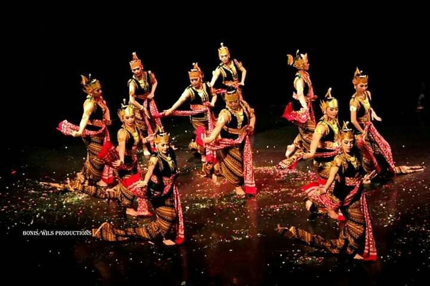
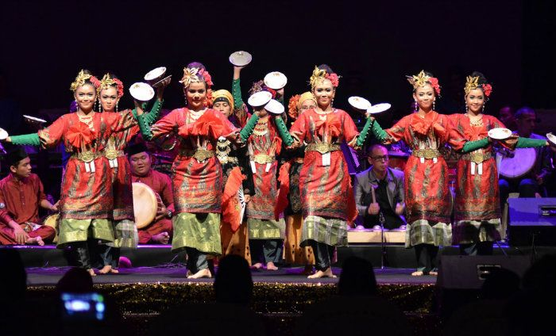
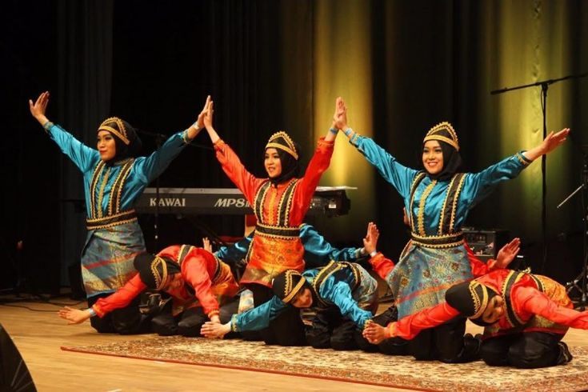
banyak kesenian dan tarian tradisional hidup di berbagai daerah Indonesia. TARI: sama(Aceh) TARI: Piring(Sumatra Barat) TARI: Bedhayan(Surakarta/Yogyakarta)
Batik
Tambahkan foto
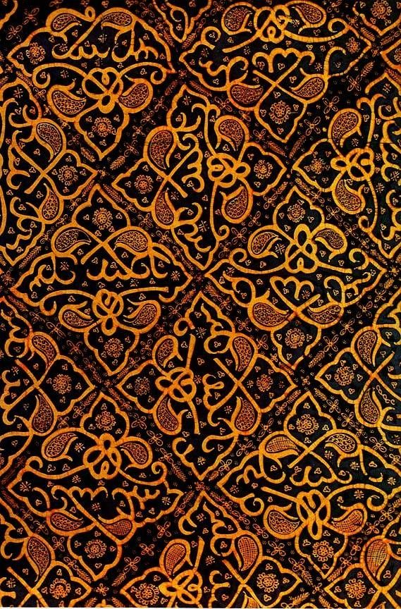
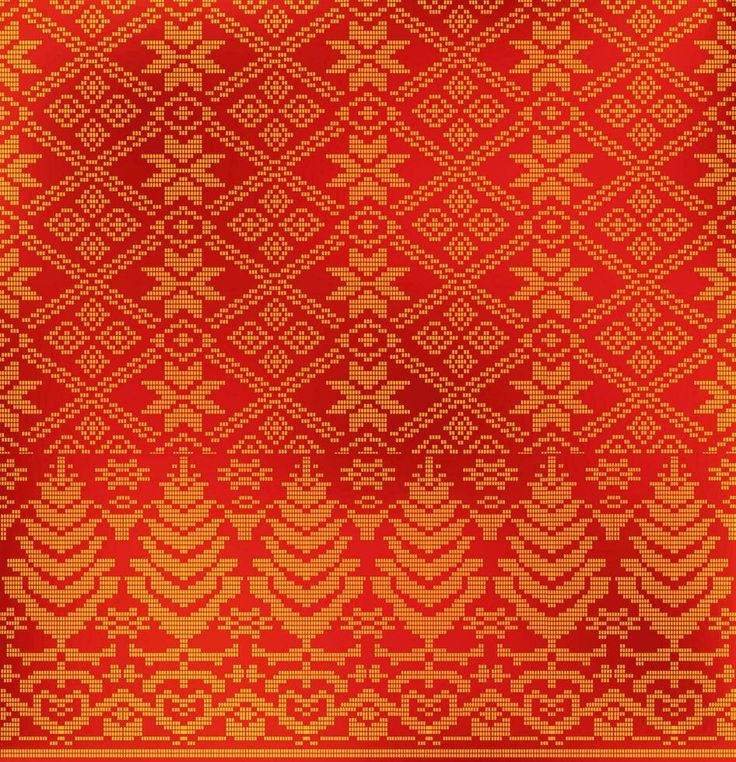
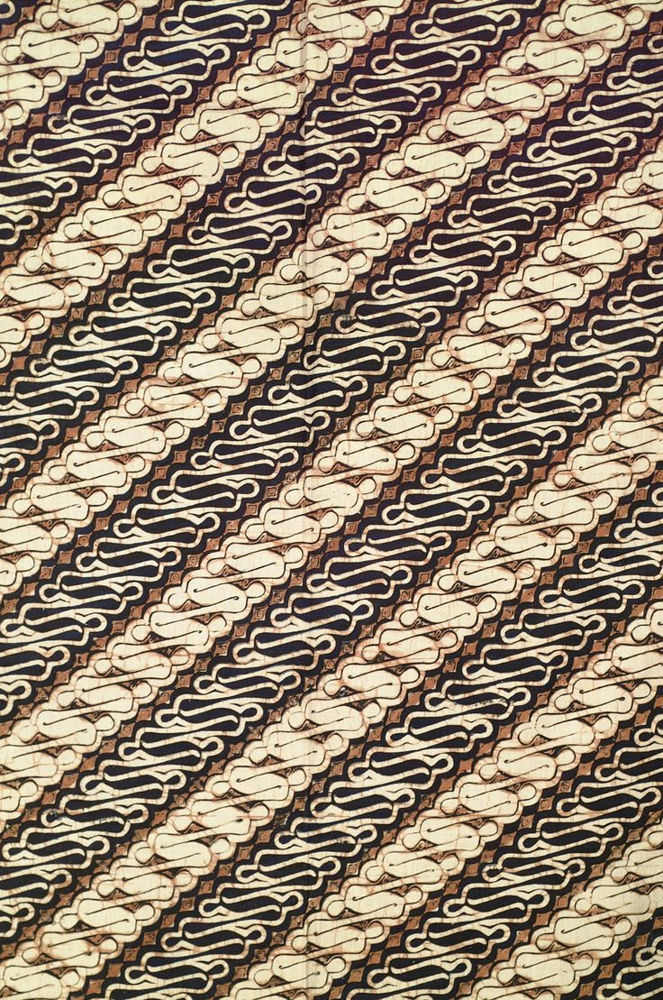
Warisan budaya Indonesia dengan beragam motif yang mencerminkan identitas daerah. BATIK: Besurek(Bengkulu) BATIK: Songket(palembang) BATIK: Parang(Jawa Tengah)
Alat Musik
Tambahkan foto
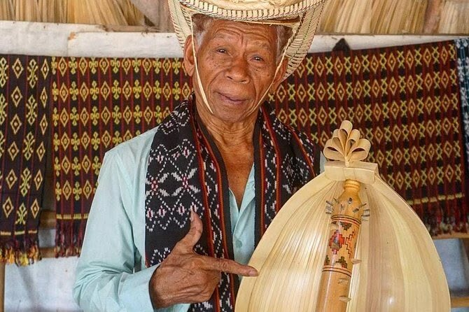

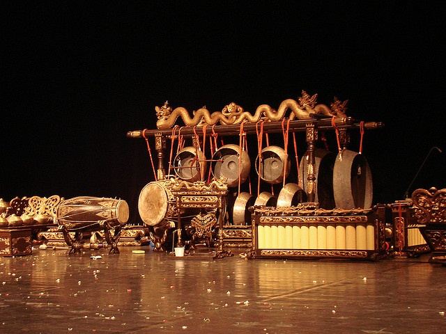
berbagai alat musik tradisional menjadi bagian identitas bangsa. Sasando(NTT) Gamelan(jawa&bali) Angklung(Jawa barat)
Makanan Tradisional
Tambahkan foto
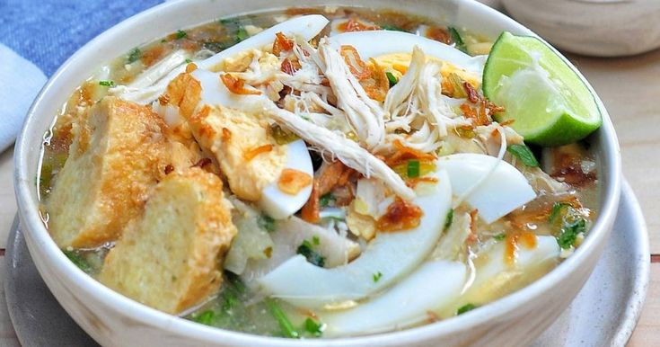
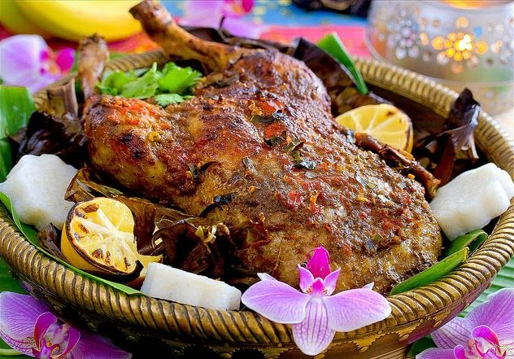
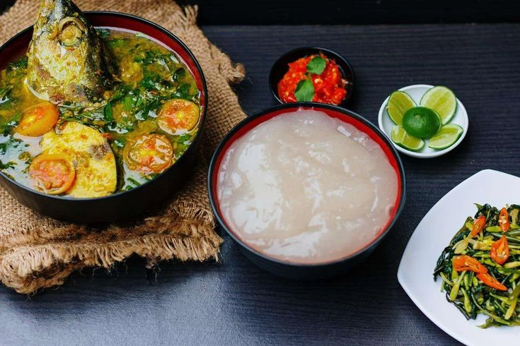
Kekayaan rempah melahirkan berbagai makanan khas yang dikenal hingga mancanegara. Soto Banjar(Kalimantan Selatan) Ayam Betutu(Bali) Papeda(Papua)
Rumah Adat
Tambahkan foto
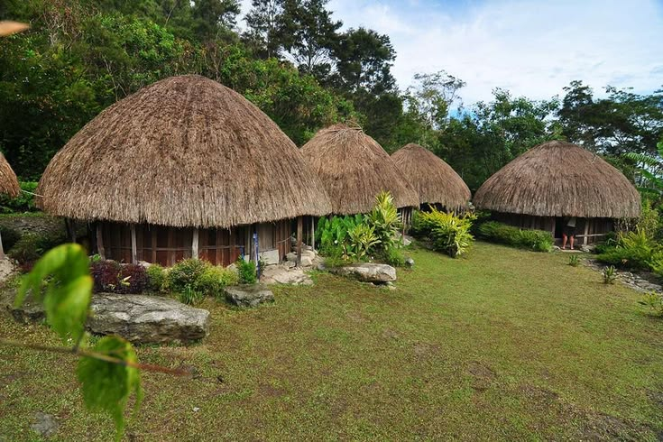
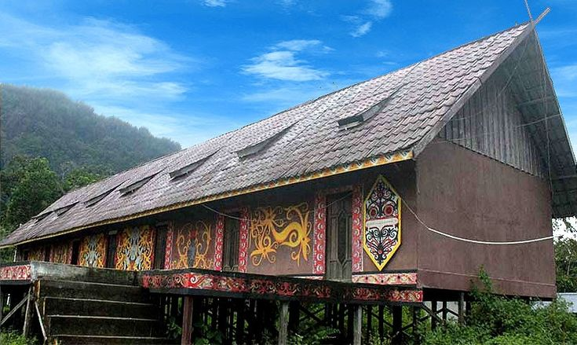
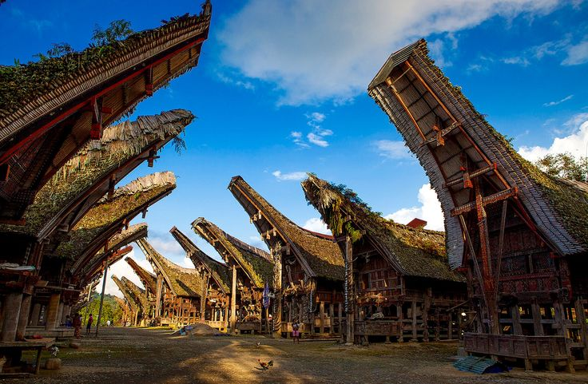
Arsitektur tradisional Nusantara memiliki karakter unik di setiap daerah. RUMAH ADAT: Honai(Papua pegunungan) RUMAH ADAT: Betang(Kalimantan Barat) RUMAH ADAT: Tongkonan(Sulawesi Selatan)
Nusantara
Tambahkan foto
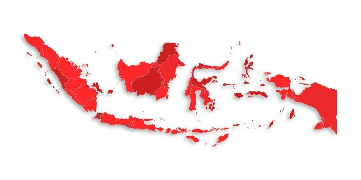
Ribuan pulau membentuk Indonesia sebagai salah satu negara kepulauan terbesar di dunia.